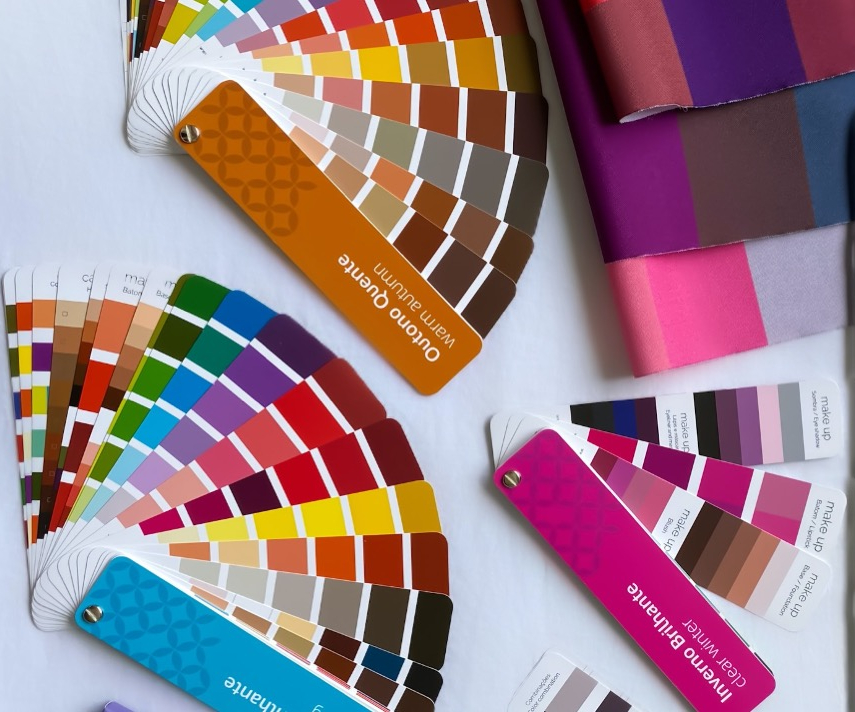
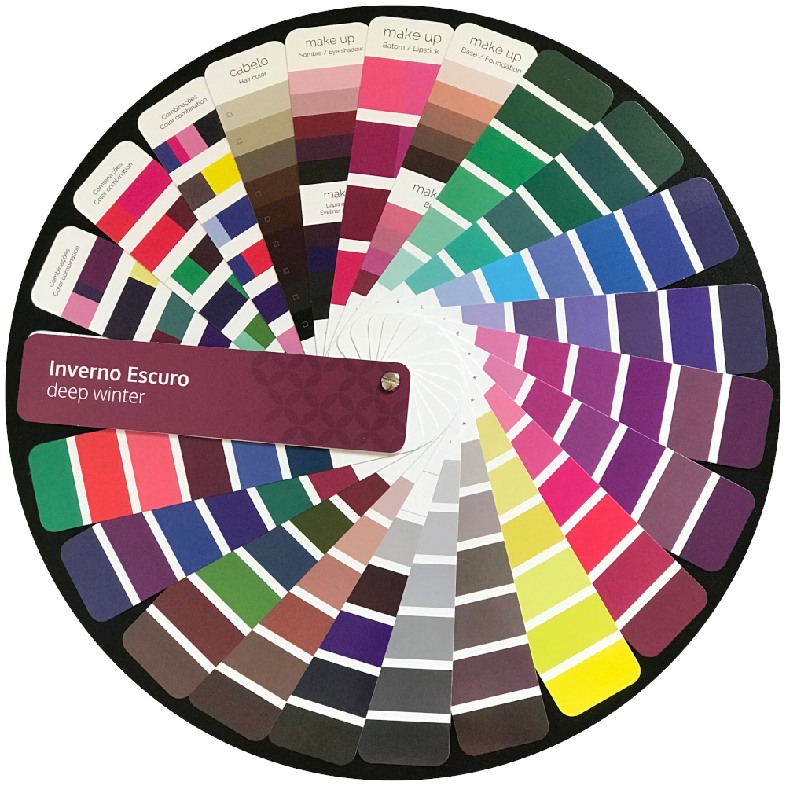

Analíse cromática
todos nós já nascemos coloridos. possuímos um padrão de pigmentos que tornam nossa beleza única! e todas essas cores presentes em nós estão em harmonia. nosso cabelo, olhos, lábios e o subtom da nossa pele.
na análise de coloração pessoal iremos descobrir quais são as cores que harmonizam com a sua beleza natural, ou seja, o padrão de cores que está presente em você!


